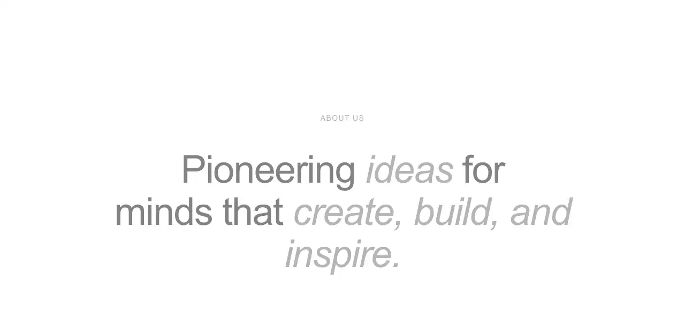

Dark, liquid-glass marketing landing page: a full-viewport hero with a cross-fading background video, a frosted glass pill nav and an inline email form, then scroll-revealed about, featured-video, philosophy and services sections, closing on a multi-column footer. Framer Motion throughout, with a self-contained pure-black palette and Instrument Serif accents.

Rendered on the shadcn default neutral palette with harness-generated props.
pnpm dlx shadcn@4.21.0 add @hirael/asme
| licence | ASSET |
|---|---|
| primitive base | none |
| type | registry:block |
| files | src/components/templates/asme/about.tsxsrc/components/templates/asme/asme.tsxsrc/components/templates/asme/featured-video.tsxsrc/components/templates/asme/fonts.tssrc/components/templates/asme/footer.tsxsrc/components/templates/asme/hero.tsxsrc/components/templates/asme/navbar.tsxsrc/components/templates/asme/philosophy.tsxsrc/components/templates/asme/primitives.tsxsrc/components/templates/asme/services.tsxsrc/components/templates/asme/styles.tsx |
| npm deps pulled | none beyond the pre-installed peer set |
| registry deps | button field |
| semantic / palette / hex | 60 / 0 / 3 |
| writes shared ui/ | no |